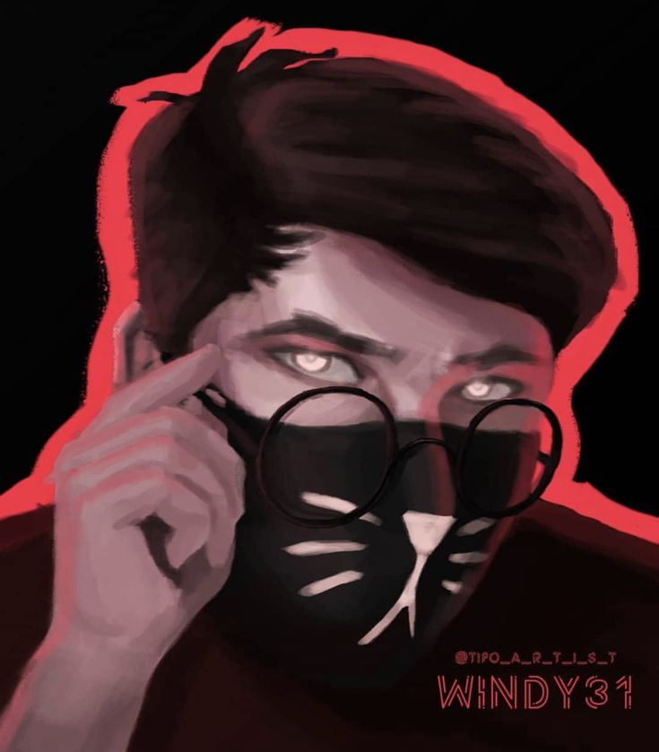
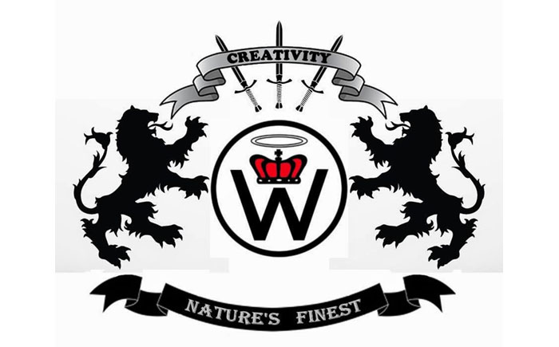
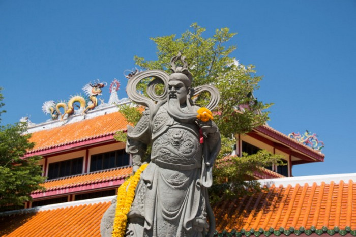
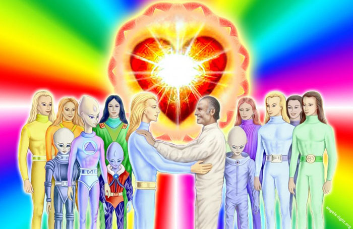
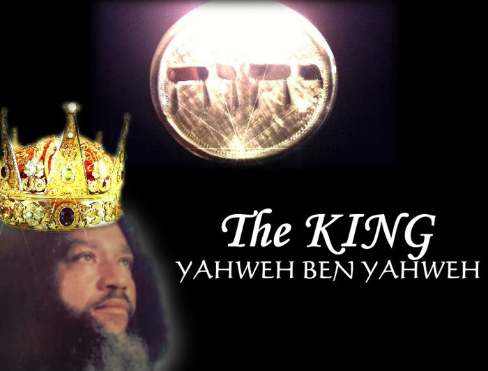

Культ — это ответ человека на открытие Высшей реальности, на встречу с Богом, форма поклонения Богу, средство сохранения и обновления взаимоотношений с Высшим, оживления веры и актуализации изначального духовного опыта встречи; это также средство вовлечения в этот опыт других людей, свидетельство общиной опыта встречи и поклонения Высшему, что и превращает культ в факт общественного значения. Культ - средоточие служения Высшему, вокруг культа развертываются все прочие формы религиозной жизни и деятельности. С библейской точки зрения служение Богу в виде культа - это осуществление призвания народа Божия свидетельствовать миру единого Бога и Его правду. Средоточие христианского культа - Евхаристия, священная трапеза Нового Завета.
Культ Хаоситов

Юморостическое общество подписщиков видео-блогера Windy31. Их задача распростроняться и кричать "Слава Хаосу!". Всё.
Культ Креативности

К сожалению, расизм и религия часто пересекаются, и появляются культы, подобные культу Креативности. Эта религия для белых похожа на Ку-клукс-клан, проповедует верховенство белых. Движение еще называют «Мировой церковью креативистов».
Гуань Юй

Гуань Юй, также известный как Гуань Гун, был генералом, который служил под руководством Лю Бэя в конце династии Восточный Хань (третий век до нашей эры). Со временем Гуань Юй стал иконой лояльности и праведности. В конце концов, его признали в качестве бога войны и богатства , которому начали поклоняться в Китае, Гонконге, Тайване, Сингапуре, и китайских кварталах по всему миру.
Люди Вселенной

«Люди Вселенной» - это чешский культ, который пропагандирует веру в инопланетян и телепатическое общение с внеземными цивилизациями. Члены культа верят в то, что силы дьявола будут уничтожены благодаря вмешательству инопланетян.
Нация Яхве

Культ основан афроамериканцами с еврейскими корнями, которые верят в то, что вернутся на свою родину, Израиль. Этот культ не исповедует ни христианство, ни иудаизм, но верят в сына Бога, Яхве бен Яхве. Культ обвиняют в том, что в «белых» людей вселился дьявол, а истинными наследниками Иисуса являются только «черные».
Отправьте нам сообщение
Если у вас есть какие-то вопросы или предложения по сотрудничеству -
заполните форму ниже